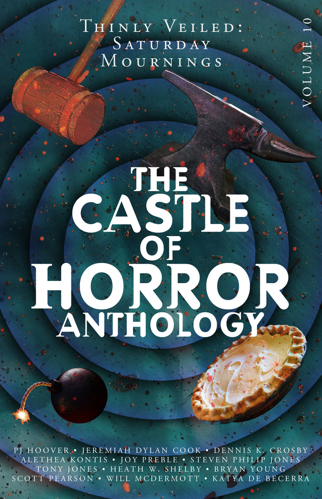
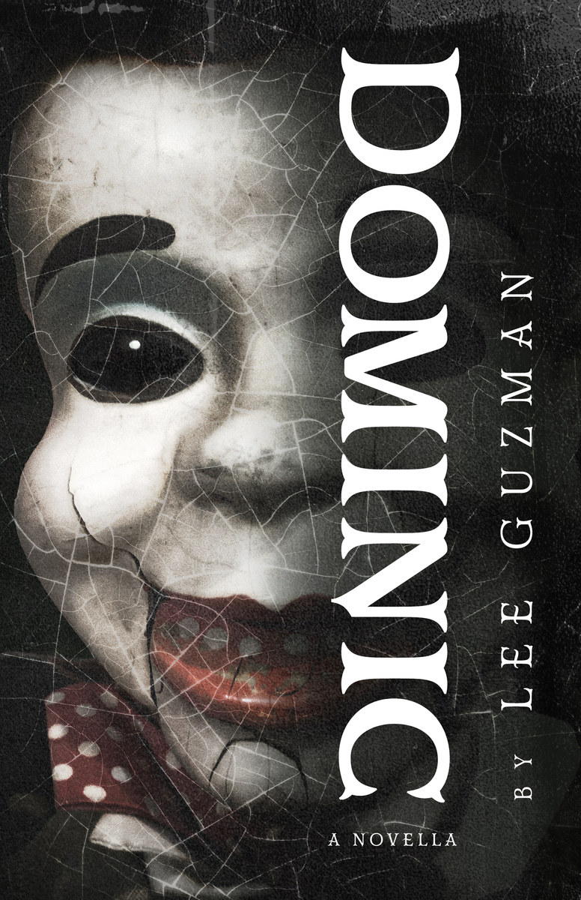
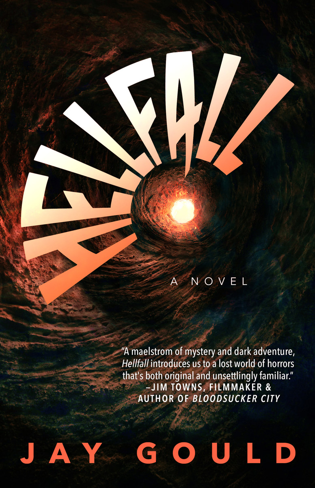
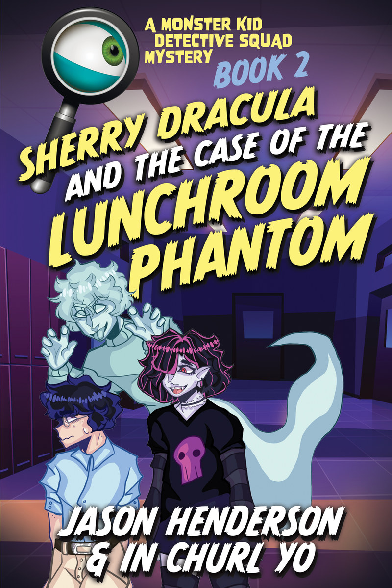

Our books
Publishing
We publish horror, mystery, fantasy and thriller fiction, as well as nonfiction, for adults and young readers, working closely with authors to find and grow their audiences.
 The 23rd Hero
The 23rd Hero Animal Charmer
Animal Charmer Magic & Melody (Animal Charmer Book 2)
Magic & Melody (Animal Charmer Book 2) Austinites
Austinites- Beneath the Bluebonnets: Tales of Terror
 Blood of the Mazzaroth
Blood of the Mazzaroth Bloodsucker City
Bloodsucker City Castle of Horror Anthology Volume 1
Castle of Horror Anthology Volume 1 Castle of Horror Anthology Volume 2: Holiday Horrors
Castle of Horror Anthology Volume 2: Holiday Horrors- Castle of Horror Anthology Volume 3: Scary Summer Stories
 Castle of Horror Anthology Volume 4: Women Running from Houses
Castle of Horror Anthology Volume 4: Women Running from Houses Castle of Horror Anthology Volume 5: Thinly Veiled: The 70's
Castle of Horror Anthology Volume 5: Thinly Veiled: The 70's- Castle of Horror Anthology Volume 6: Femme Fatales
- Castle of Horror Anthology Volume 7: Love Gone Wrong
- Castle of Horror Anthology Volume 8: Thinly Veiled: The 80's
- Castle of Horror Anthology Volume 9: Young Adult

Castle of Horror Anthology Volume 10: Saturday Mournings- Castle of Horror Anthology Volume 11: Revenge
 Castle of Horror Anthology Volume 12: Ripped from the Headlines
Castle of Horror Anthology Volume 12: Ripped from the Headlines Castle of Horror Podcast Book of Great Horror
Castle of Horror Podcast Book of Great Horror- Cherry Dark
- Child of Dark Water

Dominic Dream State
Dream State- Everyone Is Worried
 French Deception: A Forgery in Paris
French Deception: A Forgery in Paris- French Deception 2: A Forgery in Lyon
- French Deception: A Forgery in Marseille
- French Deception: A Forgery in Toulouse
 Futurepast Anthology Volume 1
Futurepast Anthology Volume 1 Glazier's Gap Book 1: Ghosts of the Forbidden
Glazier's Gap Book 1: Ghosts of the Forbidden
Hellfall- Hellrise
 Isonation
Isonation Jayu City Chronicles Book 1: The Hermes Protocol
Jayu City Chronicles Book 1: The Hermes Protocol- Jayu City Chronicles Book 2: Necropolis Alpha
 Jayu City Chronicles Book 3: The Cordelia Solution
Jayu City Chronicles Book 3: The Cordelia Solution Junk Film: Why Bad Movies Matter
Junk Film: Why Bad Movies Matter The Kings of Yellow Street
The Kings of Yellow Street Pre-Order NowKudzu
Pre-Order NowKudzu- Mid-Life Crisis Thriller Book 1: 18 Miles From Town
- Mid-Life Crisis Thriller Book 2: Lost Angel
 Mid-Life Crisis Thriller Book 3: Ties That Kill
Mid-Life Crisis Thriller Book 3: Ties That Kill Nightwalkers: Gothic Horror Movies Revised Edition
Nightwalkers: Gothic Horror Movies Revised Edition The Path Book 1: The Blue-Spangled Blue
The Path Book 1: The Blue-Spangled Blue- The Path Book 2: The Deepest Green
 Play Role Play
Play Role Play The Burning Gem (Soul Catcher Book 1)
The Burning Gem (Soul Catcher Book 1) The Tunnels of Buda (Soul Catcher Book 2)
The Tunnels of Buda (Soul Catcher Book 2) St. Damned
St. Damned Strange Shape of Love
Strange Shape of Love Surf Mystic Book 1: Night of the Book Man
Surf Mystic Book 1: Night of the Book Man- Surf Mystic Book 2: Dark of the Curl
 The Thing That Happened When We Were Little
The Thing That Happened When We Were Little Tick Town
Tick Town Vinyl Wonderland
Vinyl Wonderland Yesterday's Tomorrows: The Golden Age of Sci-Fi Movie Posters
Yesterday's Tomorrows: The Golden Age of Sci-Fi Movie Posters Hall-Lore-Ween: Thrice The Fright
Hall-Lore-Ween: Thrice The Fright Hall-Lore-Ween
Hall-Lore-Ween It's Hall-Lore-Ween Again!
It's Hall-Lore-Ween Again! Elsie Frankenstein and the Case of the Disappearing Dog
Elsie Frankenstein and the Case of the Disappearing Dog
Sherry Dracula and the Case of the Lunchroom Phantom Rico Gillman and the Case of the See-Through Woman
Rico Gillman and the Case of the See-Through Woman
No books match that search.